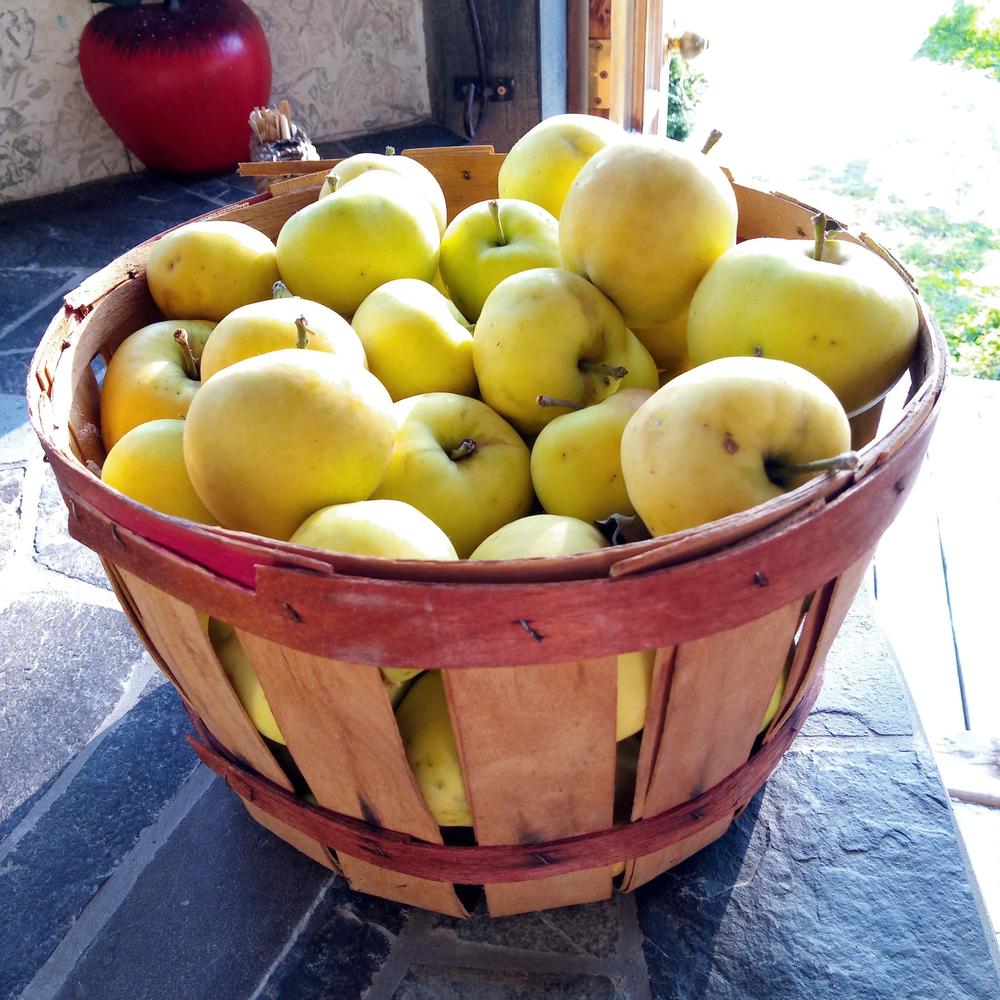
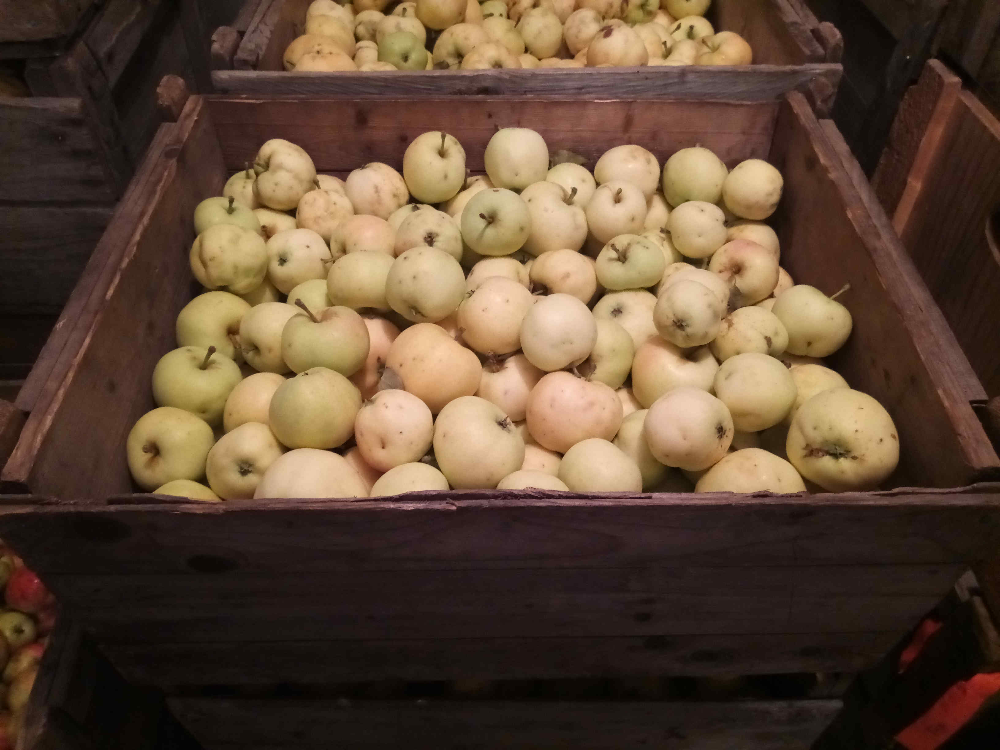
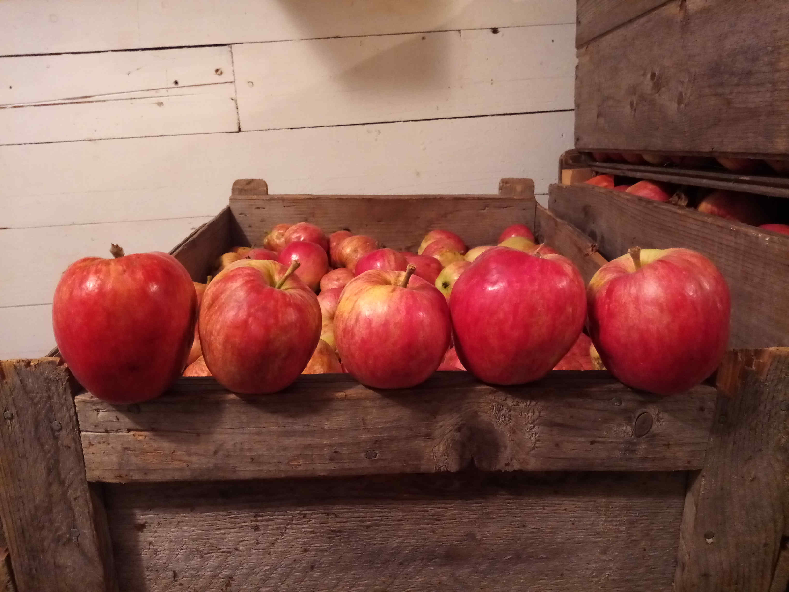
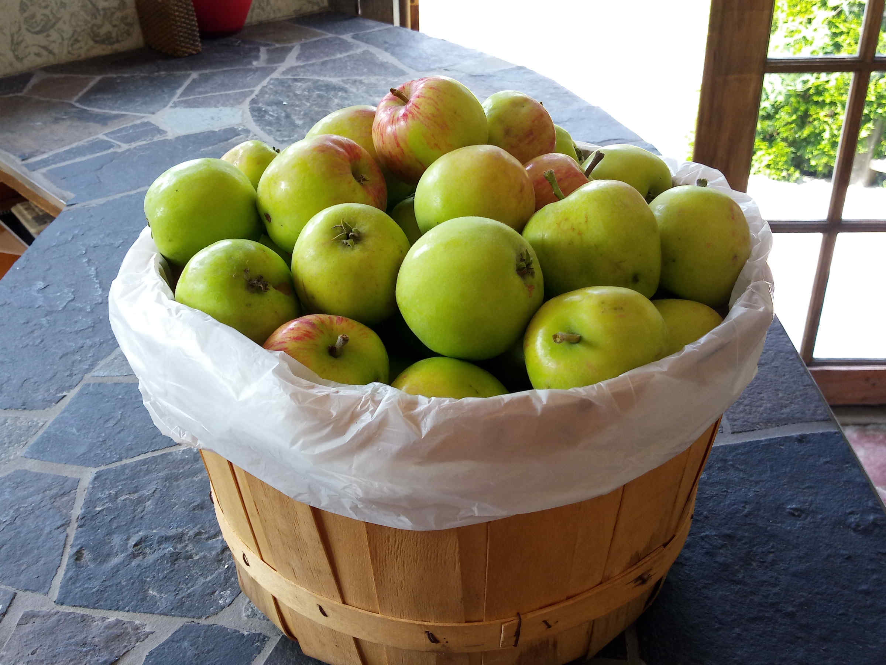
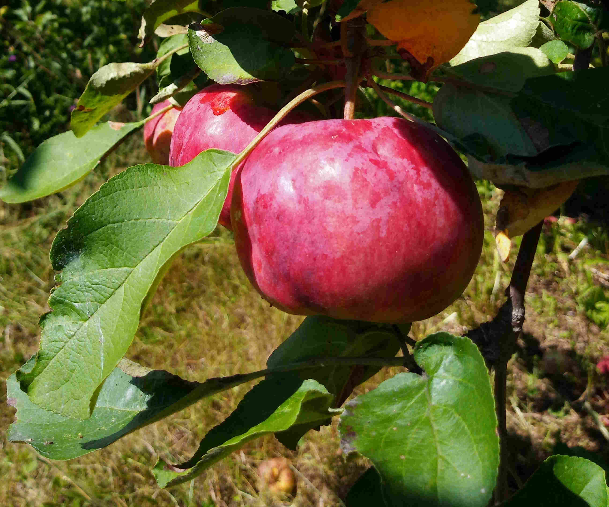
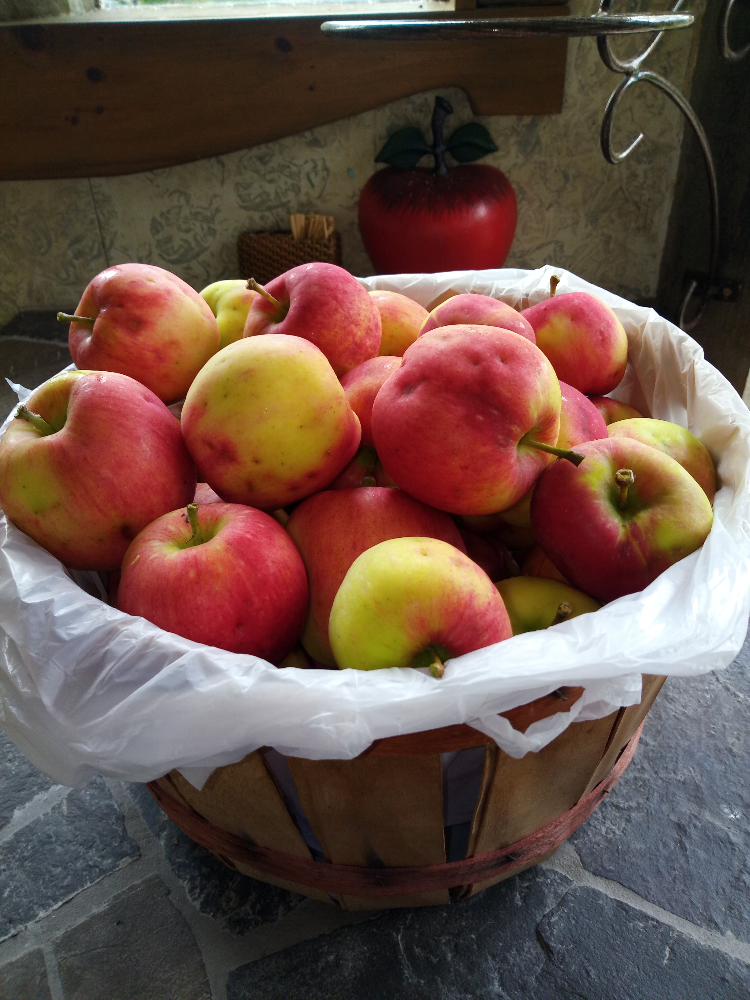
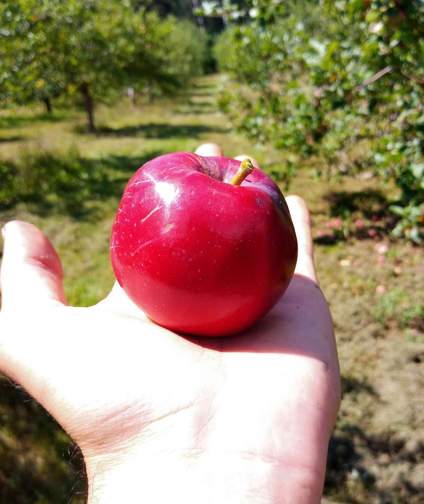
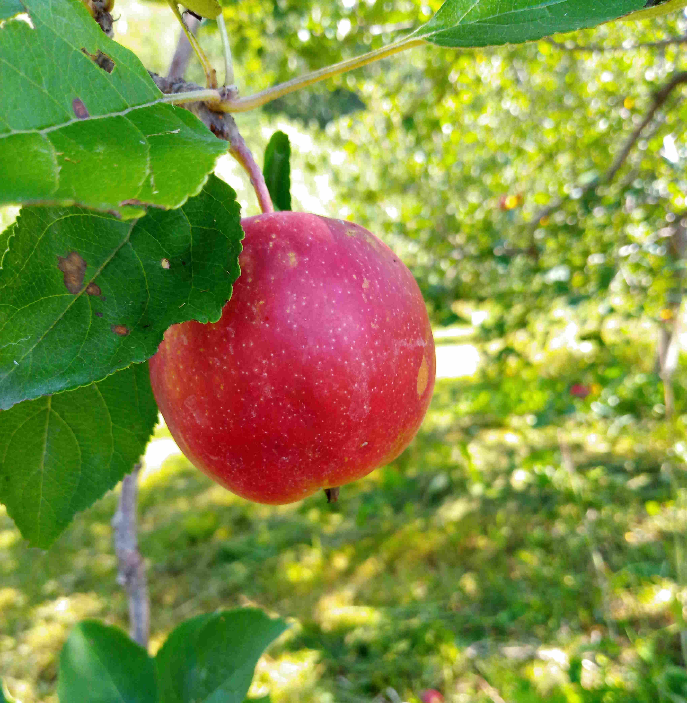
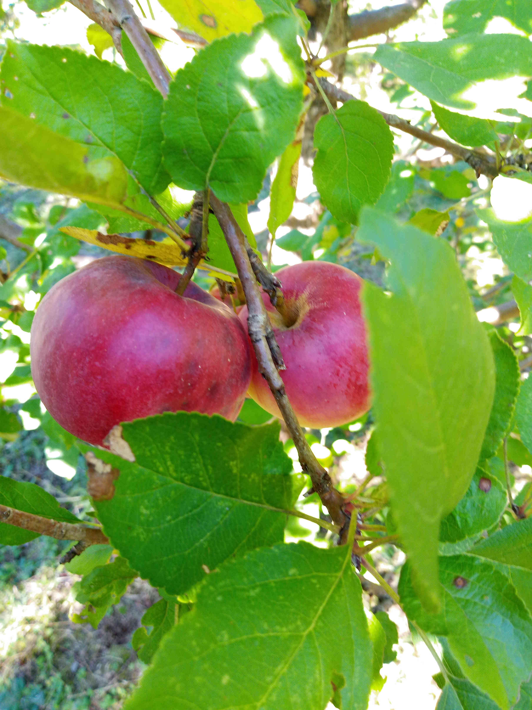
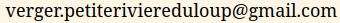

Bienvenue sur le site web du verger biologique (Ecocert) de la petite rivière du loup à Pointe-à-la-Croix.
Depuis 2021, la Société de développement de Pointe-à-la croix nous supporte pour le maintient et le développement du verger de feu Rodrigue Guitard.
Nous avons pour mission de participer à l'autonomie alimentaire de la région et à la solidarité sociale. Aussi, nous offrons un échange travail-fruits où l'on peut contribuer aux tâches du verger et repartir avec des pommes et des produits transformés (jus, cuir, etc.). Pour en savoir davantage, n'hésitez pas à nous contacter.
En se souhaitant une belle récolte 2025 et en espérant vous y voir !
| Prix : | Pommes en autocueillette | $ 2 / lb | |
| minot de ~39 lb (2e qualité) | $ 40 | ||
| jus 1,89 L | $ 7,50 | ||
| cuir de fruits | $ 5 | ||
| chips de pomme | $ 5, $ 10 |
| Jaune transparente | |
|---|---|
| La pomme à compote par excellence, pareille à la celle de grand-mère. C'est aussi celle qu'on aime pour le beurre de pomme, les cuirs de fruits et les gâteaux à la compote. | |
| Lodi | |
| La petite pomme sûre, mais sucrée du début d'août. Aussi une bonne pomme à compote. | |
| Norland | |
| Pomme à croquer, à tarte ou à jus, avec du caractère ! | |
| Battleford | |
| Ne vous laissez pas tromper par sa couleur, elle n'est pas verte de jalousie et n'a rien à envier à ses consoeurs plus rouges ; douce et juteuse, parfaite pour les chaleurs déréglées de l'été. | |
| Jersey-mac | |
| Paulared | mangées |
|---|---|
| Variété bien connue de grosses pommes à croquer. Se cuit aussi rapidement en compote, pour la belle compote rose ! | |
| Pommettes | mangées |
| Red free | mangées |
| Sucrée et croquante, s'il vous en reste que vous n'avez pas mangée en arrivant à la maison, elle fait aussi une bonne pomme à gateau. | |
| Viking | mangées |
| Rouge comme l'amour, douce comme le jour. Issue d'expériences ratées pour développer des variétés résistantes à la tavelure ; elle a été propagée quand même à cause de ses qualités gustatives. À croquer et conserve bien sa saveur et sa couleur à la cuisson. | |
| Beacon | mangées |
| Non mais ! regardez-la avec ses airs de gala. D'ailleurs, comme la 'Gala', le goût rappelle un peu celui des pommes à chaire jaune. Pomme à cuisson, tout à fait croquable. | |
| Wealthy | mangées |
| Nova mac | prêtes |
| Une macintosh résistante à la tavelure ! | |
| Lobo | prêtes |
| Macintosh | prêtes |
| Macintosh | |
|---|---|
| Honeycrisp | |
| Cortland | |
| Alexandre | |
| Liberty | |
| Freedom | fin octobre |
L'auto-cueillette est terminée pour la saison 2024, de retour l'an prochain !
Il est toujours possible de les groupes scolaires et organismes d'organiser des activités au verger (y compris la cueillette). Contactez-nous pour en savoir d'avantage.
Contacter le verger
verger.petiteriviereduloup@gmail.com
581-884-5401
via facebook